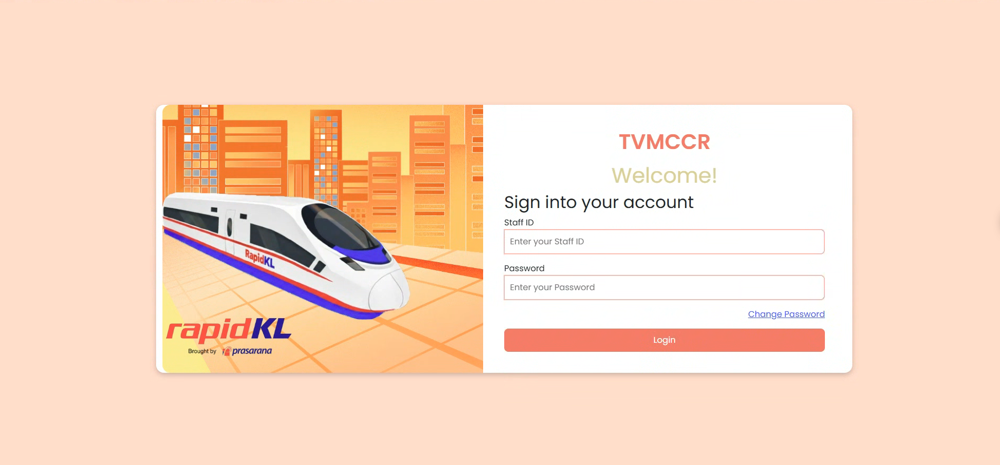
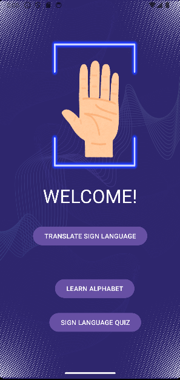

Software Maintenance Executive focused on AI-powered solutions, system reliability, and digital transformation. I transform manual, repetitive processes into robust, scalable digital systems.
I am a Second Class Honours (Upper Division) Computer Science graduate specializing in software maintenance, data analytics, and Artificial Intelligence.
Currently, I work at Prasarana Malaysia Berhad as a Software Maintenance Executive, where I support Automated Fare Collection (AFC) systems. My role goes beyond basic IT support; I actively contribute to system reliability, digital transformation, and operational efficiency on a national scale.
I enjoy identifying bottlenecks in manual workflows and engineering solutions using software, automation, databases, and AI. Whether it is deploying an AI-powered receipt recognition system across multiple rail lines or building data dashboards that drive departmental decisions, my focus remains on delivering tangible, real-world impact.
Deploying computer vision and OCR to eliminate manual data entry.
Maintaining 100% data accuracy and ISO compliance for critical transit systems.
Transforming raw governance and operational data into actionable visual insights.
Maximizing AFC system availability (CC, PcVue, TVM, AVM, Gates). Ensuring 100% data accuracy for ridership and revenue. Leading system development initiatives, processing MY50 transit claims, and maintaining ISO certification with zero repetitive IMS NCR findings.
Analyzed governance advisory data and created actively used Power BI dashboards. Presented data-driven solutions to supervisors and supported workflow automation using Power Apps.
Designed and developed front-end and back-end components for a BERNAMA website and a staff directory system. Documented processes, tested systems, and improved UX based on user feedback.
Developed and deployed an AI-powered digital workflow system that replaces paper-based TVM collection processes with automated receipt recognition and data extraction. Successfully implemented across Kelana Jaya (KJL), Ampang (AGL), and Monorail (MRL) lines.

AI-Powered TCCR System Dashboard

Developed an NLP/Computer Vision system to translate sign language using Python, TensorFlow, and CNNs. Handled multimedia data preprocessing and geometric modeling, achieving 80% accuracy in testing to bridge communication gaps.
Designed and developed a comprehensive management system utilizing software engineering principles, user interface design, VB.NET programming, and database management to streamline administrative operations.
Recognized for developing and deploying the AI-powered TCCR System across multiple rail lines to optimize operations and reduce costs.
2 Semesters, Universiti Teknologi Malaysia (Diploma)
Cohort 9 (2024). Selected among 100 final-year students from 5 public universities.
MGR Program (2023). Generated RM13,000 revenue for 700+ participants.
Led multimedia and event execution initiatives.
COVID-19 Task Force Volunteer (2020) & Certificate of PROFESOR MUDA, PROGRAM JUARA (2017).
Universiti Teknologi Malaysia, Johor Bahru
CGPA: 3.21 / 4.00 (Second Class Honours, Upper Division)
Universiti Teknologi Malaysia, Kuala Lumpur
CGPA: 3.30 / 4.00